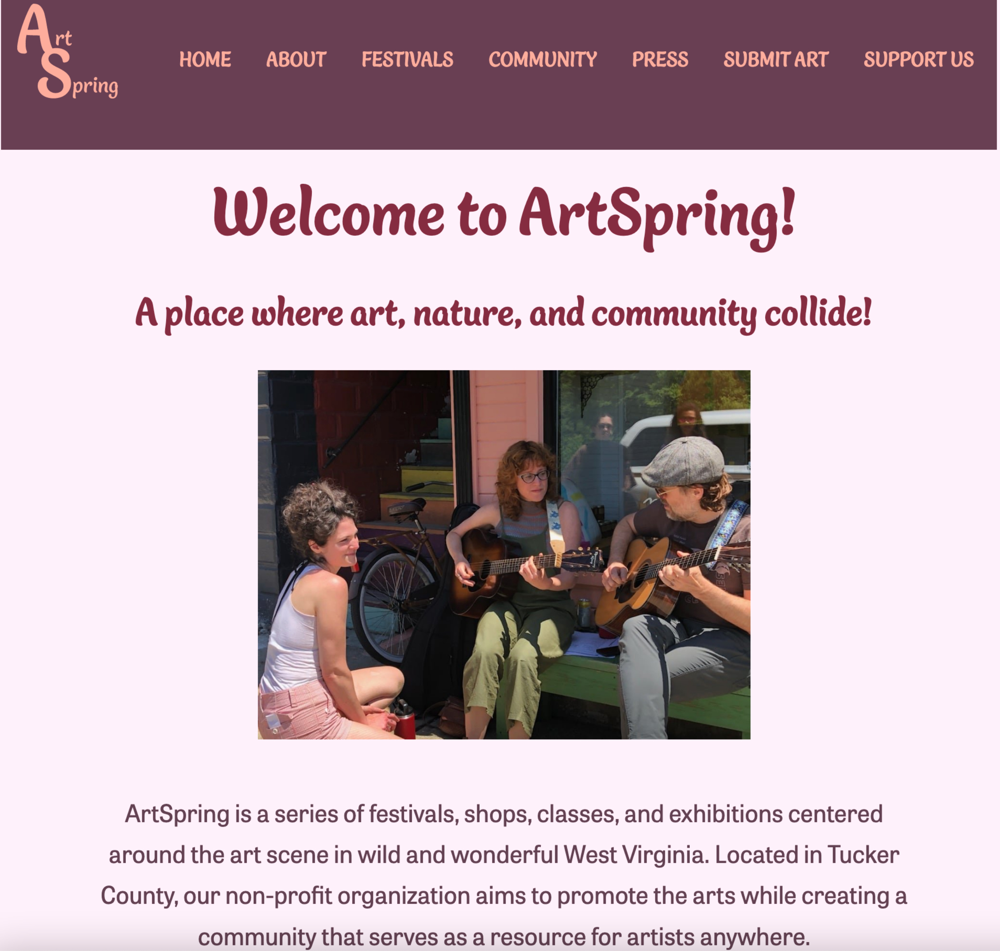
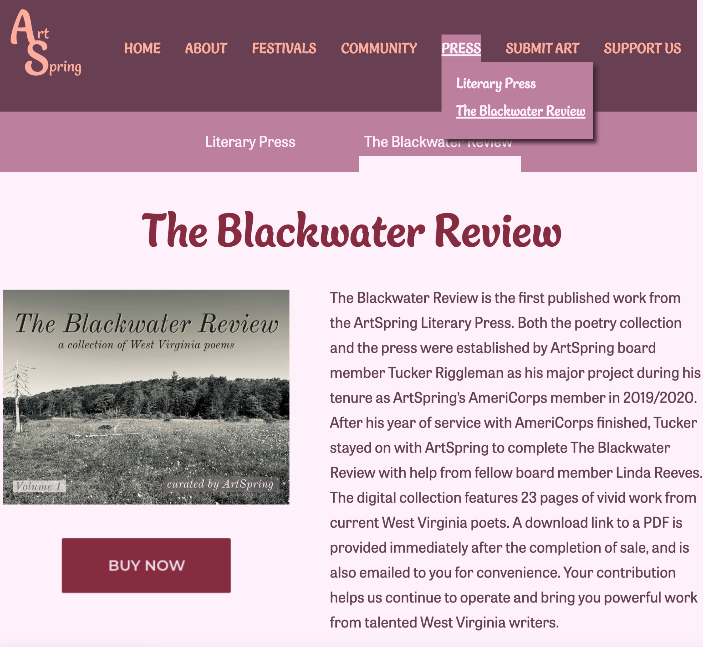

Website Redesign: ArtSpring Festival
- Medium: Website
- Date: Spring 2023
- Programs Used: Adobe XD, Illustrator, Visual Studio Code
ArtSpring is an art festival that is held annually in Tucker County, WV. This website is a full rebrand of the ArtSpring website. Various pages were rewritten to better convey the info for an incoming audience. A large part of desigining this website consisted of considering usability and finding new ways to implement the most important information. Additional information such as places to stay and eat were added to make the website feel more official and similar to other websites with similar content.
A completely new color palette and logo were designed to create a sense of unification between the content of the website and the website itself. Design conventions such as hover states and active page indicators are used to help accessibility and to prevent the user from feeling lost.